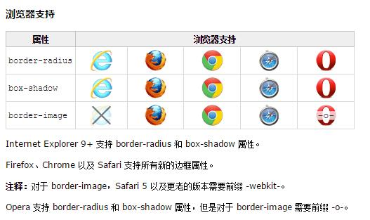
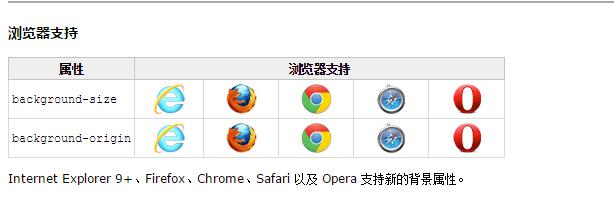
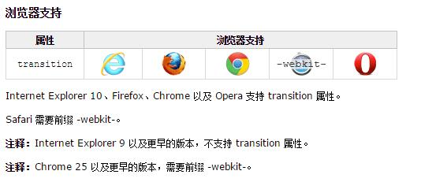
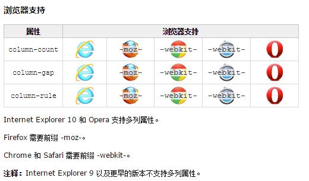

CSS3 边框
通过 CSS3，您能够创建圆角边框，向矩形添加阴影，使用图片来绘制边框 - 并且不需使用设计软件，比如 PhotoShop。
- border-radius 创建圆角
- box-shadow 添加阴影
- border-image 使用图片来创建边框

这个矩形有圆角哦！
box-shadow 用于向方框添加阴影
在这里，图片铺满整个边框。
在这里，图片被拉伸以填充该区域。
CSS3 背景
CSS3 包含多个新的背景属性，它们提供了对背景更强大的控制。
- background-size 规定背景图片的尺寸
- background-origin 规定背景图片的定位区域
- 多重背景图片

您能够以像素或百分比规定尺寸。如果以百分比规定尺寸，那么尺寸相对于父元素的宽度和高度。
背景图片可以放置于 content-box、padding-box 或 border-box 区域。
body
{
background-image:url(bg_flower.gif),url(bg_flower_2.gif);
}
缩小的背景图片
content-box
border-box
CSS3 文本效
- text-shadow 向文本应用阴影
- word-wrap 自动换行
h1
{
text-shadow: 5px 5px 5px #FF0000;
}
p {word-wrap:break-word;}
文本阴影效果！
CSS3 字体
当您您找到或购买到希望使用的字体时，可将该字体文件存放到 web 服务器上，它会在需要时被自动下载到用户的计算机上。
您“自己的”的字体是在 CSS3 @font-face 规则中定义的。
在新的 @font-face 规则中，您必须首先定义字体的名称（比如 myFirstFont），然后指向该字体文件。
/*
@font-face
{
font-family: myFirstFont;
src: url('Sansation_Light.ttf'),
url('Sansation_Light.eot'); * IE9+ *
}
div
{
font-family:myFirstFont;
}*/
| 描述符 | 值 | 描述 |
|---|---|---|
| font-family | name | 必需。规定字体的名称。 |
| src | URL | 必需。定义字体文件的 URL。 |
| font-stretch |
|
可选。定义如何拉伸字体。默认是 "normal"。 |
| font-style |
|
可选。定义字体的样式。默认是 "normal"。 |
| font-weight |
|
可选。定义字体的粗细。默认是 "normal"。 |
| unicode-range | unicode-range | 可选。定义字体支持的 UNICODE 字符范围。默认是 "U+0-10FFFF"。 |
CSS3 2D 转换
通过 CSS3 转换，我们能够对元素进行移动、缩放、转动、拉长或拉伸。
- translate() 元素从其当前位置移动，根据给定的 left（x 坐标） 和 top（y 坐标）
- rotate() 元素顺时针旋转给定的角度
- scale() 元素的尺寸会增加或减少，根据给定的宽度（X 轴）和高度（Y 轴）
- skew() 元素翻转给定的角度，根据给定的水平线（X 轴）和垂直线（Y 轴）
- matrix() 把所有 2D 转换方法组合在一起
div
{
transform: rotate(30deg);
-ms-transform: rotate(30deg); /* IE 9 */
-webkit-transform: rotate(30deg); /* Safari and Chrome */
-o-transform: rotate(30deg); /* Opera */
-moz-transform: rotate(30deg); /* Firefox */
}
div
{
transform: translate(50px,100px);
-ms-transform: translate(50px,100px); /* IE 9 */
-webkit-transform: translate(50px,100px); /* Safari and Chrome */
-o-transform: translate(50px,100px); /* Opera */
-moz-transform: translate(50px,100px); /* Firefox */
}
div
{
transform: rotate(30deg);
-ms-transform: rotate(30deg); /* IE 9 */
-webkit-transform: rotate(30deg); /* Safari and Chrome */
-o-transform: rotate(30deg); /* Opera */
-moz-transform: rotate(30deg); /* Firefox */
}
div
{
transform: scale(2,4);
-ms-transform: scale(2,4); /* IE 9 */
-webkit-transform: scale(2,4); /* Safari 和 Chrome */
-o-transform: scale(2,4); /* Opera */
-moz-transform: scale(2,4); /* Firefox */
}
div
{
transform: skew(30deg,20deg);
-ms-transform: skew(30deg,20deg); /* IE 9 */
-webkit-transform: skew(30deg,20deg); /* Safari and Chrome */
-o-transform: skew(30deg,20deg); /* Opera */
-moz-transform: skew(30deg,20deg); /* Firefox */
}
div
{
transform:matrix(0.866,0.5,-0.5,0.866,0,0);
-ms-transform:matrix(0.866,0.5,-0.5,0.866,0,0); /* IE 9 */
-moz-transform:matrix(0.866,0.5,-0.5,0.866,0,0); /* Firefox */
-webkit-transform:matrix(0.866,0.5,-0.5,0.866,0,0); /* Safari and Chrome */
-o-transform:matrix(0.866,0.5,-0.5,0.866,0,0); /* Opera */
}


matrix(s, 0, 0, s, 0, 0);
x' = ax+cy+e = s*x+0*y+0 = s*x;
y' = bx+dy+f = 0*x+s*y+0 = s*y;
也就是matrix(sx, 0, 0, sy, 0, 0);，等同于scale(sx, sy);
拉伸也用到了三角函数，不过是tanθ，而且，其至于b, c两个参数相关，书写如下（注意y轴倾斜角度在前）
matrix(1,tan(θy),tan(θx),1,0,0)
x' = x+y*tan(θx)+0 = x+y*tan(θx)
y' = x*tan(θy)+y+0 = x*tan(θy)+y
对应于skew(θx + "deg"，θy+ "deg")这种写法。
就旋转而言，rotate(θdeg)这种书写形式要比matrix简单多了，首先记忆简单，其次，无需计算。
例如，旋转30°，前者直接：
transform:rotate(30deg);
而使用matrix表示则还要计算cos, sin值：
transform: matrix(0.866025,0.500000,-0.500000,0.866025,0,0);
CSS3 transform的matrix()方法写法如下：
transform: matrix(a,b,c,d,e,f);

目前属性值为：matrix(1,0,0,1,0,0)
x轴比例(1-3)：
y轴比例(1-3)：
目前属性值为：matrix(1,0,0,1,0,0)
x轴倾斜角度(0-89)：
y轴倾斜角度(0-89)：
目前属性值为：matrix(1,0,0,1,0,0)
请输入角度(0~360)：
↑

| 属性 | 描述 | 用法 | CSS |
|---|---|---|---|
| transform | 向元素应用 2D 或 3D 转换。 | transform: none|transform-functions; | 3 |
| transform-origin | 允许你改变被转换元素的位置。 | transform-origin: x-axis y-axis z-axis; | 3 |
| 值 | 描述 |
|---|---|
| x-axis |
定义视图被置于 X 轴的何处。可能的值：
|
| y-axis |
定义视图被置于 Y 轴的何处。可能的值：
|
| z-axis |
定义视图被置于 Z 轴的何处。可能的值：
|
CSS3 3D 转换
- rotateX() 元素围绕其 X 轴以给定的度数进行旋转。
- rotateY() 元素围绕其 Y 轴以给定的度数进行旋转。
| 属性 | 描述 | CSS |
|---|---|---|
| transform | 向元素应用 2D 或 3D 转换。 | 3 |
| transform-origin | 允许你改变被转换元素的位置。 | 3 |
| transform-style | 规定被嵌套元素如何在 3D 空间中显示。
|
3 |
| perspective | 规定 3D 元素的透视效果。 | 3 |
| perspective-origin | 规定 3D 元素的底部位置。 | 3 |
| backface-visibility | 定义元素在不面对屏幕时是否可见。 | 3 |
CSS3 过渡

| 属性 | 用法 | 描述 | css |
|---|---|---|---|
| transition | transition: property duration timing-function delay; | 简写属性，用于在一个属性中设置四个过渡属性。
|
3 |
| transition-property | transition-property: none|all|property | 规定应用过渡的 CSS 属性的名称。(定义应用过渡效果的 CSS 属性名称列表，列表以逗号分隔。); | 3 |
| transition-duration | transition-duration: time; | 定义过渡效果花费的时间。默认是 0。 | 3 |
| transition-timing-function | transition-timing-function: linear|ease|ease-in|ease-out|ease-in-out|cubic- bezier(n,n,n,n); | 规定过渡效果的时间曲线。默认是 "ease"。
|
3 |
| transition-delay | transition-delay: time; | 规定在过渡效果开始之前需要等待的时间，以秒或毫秒计。 | 3 |
css3 过渡
CSS3 多列
- column-count 规定元素应该被分隔的列数
- column-gap 规定列之间的间隔
- column-rule 设置列之间的宽度、样式和颜色规则

column-count： 规定元素应该被分隔的列数。
column-fill:规定如何填充列。(balance:对列进行协调,浏览器应对列长度的差异进行最小化处理|auto:按顺序对列进行填充，列长度会各有不同。)
column-gap: 规定列之间的间隔。
column-rule:设置所有 column-rule-* 属性的简写属性。
column-rule-color:规定列之间规则的颜色。
column-rule-style:规定列之间规则的样式。
column-rule-width: 规定列之间规则的宽度。
column-span:规定元素应该横跨的列数。
column-width:规定列的宽度。
columns:规定设置 column-width 和 column-count 的简写属性。
column-fill:规定如何填充列。(balance:对列进行协调,浏览器应对列长度的差异进行最小化处理|auto:按顺序对列进行填充，列长度会各有不同。)
column-gap: 规定列之间的间隔。
column-rule:设置所有 column-rule-* 属性的简写属性。
column-rule-color:规定列之间规则的颜色。
column-rule-style:规定列之间规则的样式。
column-rule-width: 规定列之间规则的宽度。
column-span:规定元素应该横跨的列数。
column-width:规定列的宽度。
columns:规定设置 column-width 和 column-count 的简写属性。
CSS3 用户界面
| 属性 | 语法 | 描述 | CSS |
|---|---|---|---|
| appearance | appearance: normal|icon|window|button|menu|field; | 允许您将元素设置为标准用户界面元素的外观
|
3 |
| box-sizing | box-sizing: content-box|border-box|inherit; | 允许您以确切的方式定义适应某个区域的具体内容。 | 3 |
| icon | 为创作者提供使用图标化等价物来设置元素样式的能力。 | 3 | |
| nav-down | 规定在使用 arrow-down 导航键时向何处导航。 | 3 | |
| nav-index | 设置元素的 tab 键控制次序。 | 3 | |
| nav-left | 规定在使用 arrow-left 导航键时向何处导航。 | 3 | |
| nav-right | 规定在使用 arrow-right 导航键时向何处导航。 | 3 | |
| nav-up | 规定在使用 arrow-up 导航键时向何处导航。 | 3 | |
| outline-offset | 对轮廓进行偏移，并在超出边框边缘的位置绘制轮廓。 | 3 | |
| resize | 规定是否可由用户对元素的尺寸进行调整。 | 3 |